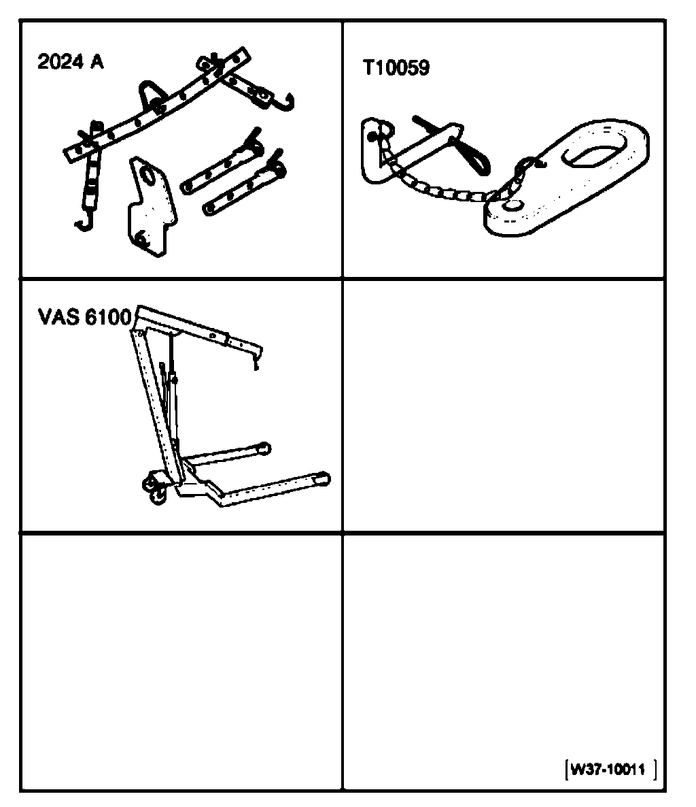
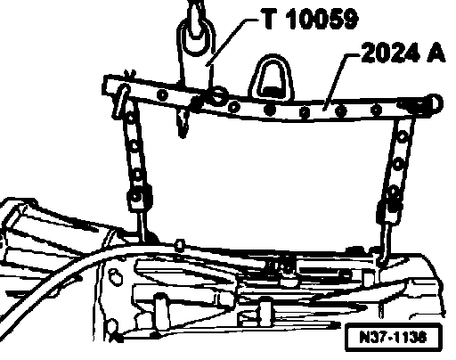

Automatic Transmission, Transporting
Transporting transmission

Special tools, testers and auxiliary items required
^ Lifting tackle 2024A
^ Shackle T10059
^ Shop crane - load capacity = 700 - 1200 Kg VAS6100

- Fasten engine sling 2024A with shackle T10059 to shop crane VAS61 00, as shown in illustration.
Input shaft side:
1. Hole for hook in position 1 of the engine sling.
Output shaft side:
1. Hole for hook in position 8 of the engine sling.
Shackle:
In position 3, input shaft side, of the engine sling.
Caution! The hooks and locating pins must be secured with locking pins.